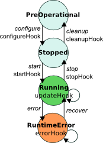
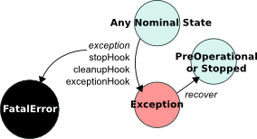

One important aspect of RTT task contexts is that they are not only an interface. They also have a representation of a state machine.

On the left is depicted the nominal state machine. On each state transition, the italic names are the names of the method that can make the transition happen, and the non-italic name the name of the method that will be called on the component so that it does something, i.e. the ones that you – the component developer – must implement if something is needed for a particular transition.
The configureHook() and startHook() methods can return false, in which case the transition is refused.
The RuntimeError state is a “degraded runtime” state. Use it when the component can still perform its job partially. As an example, a motor driver hardware could go into RuntimeError in cases where the hardware cannot control the motor anymore – for instance because of overheating protections in the hardware – but can still read the motor parameters.

Errors are represented in the way depicted on the left. The exception state is used to represent errors that demand the component to stop, but can be recovered from by restarting it. The fatal error state, however, is a terminal state: there is no way to get out of it except restarting the component’s process.
RTT will automatically transition from any state to Exception if a C++ exception is “leaked” by one of the hooks (i.e. uncaught exception). Because of such a transition, the stopHook and cleanupHook will be called before getting into Exception.
If, while going into Exception, another C++ exception is caught, the component will go into Fatal. In general, there should be no reason to transition to fatal manually.
There are two points that need to be considered when writing an task context in oroGen:
Task contexts can either start from the Stopped state or the PreOperational state. In the first case, only the C++ method startHook() will be called to start the component. In the second case, botht the configureHook() and startHook() C++ methods will be called.
As its name implies, the transition between PreOperational and Stopped is meant to encapsulate the need for complex and/or costly configuration. For instance, trying to open and configure a device (which can take very long). To give you another example, in hard realtime contexts, it is expected that startHook() is hard realtime while configureHook() does not need to be.
If your component needs a configuration step, you will have to tell it to oroGen. To do that, add the default_configuration statement in the task context block:
task_context "Task" do
needs_configuration
# other definitions
end
Et voila !
Removing or adding the needs_configuration flag after the first code generation
Adding and/or removing this flag actually requires to change the signature of the constructor of the generated code.
So, when you change this flag, you need to:
oroGen offers a way to have a more fine-grained reporting mechanism for components to their coordination (or supervision) layer. This mechanism is based on the definition of sub-states for each of the runtime and terminal states of the task context state machine: Running, RunTimeError, Exception and Fatal.
These sub-states are declared in the task_context block of the oroGen specification:
task_context "MotionTask" do
# Sub-states of Running (nominal operations)
runtime_states 'GOING_FORWARD', 'TURNING_LEFT'
# Sub-states of RunTimeError (degraded functionality)
error_states 'CANNOT_TURN'
# Sub-states of Exception (non-nominal end)
exception_states 'BLOCKED', 'SLIPPING'
# Sub-states of Fatal (not recoverable error)
fatal_states 'TOTALLY_BROKEN'
end
On the C++ side, this mechanism is available through two things:
For instance, if the updateHook() detects that the system is blocked, it would do
void MotionTask::updateHook()
{
// code
if (blocked)
{
exception(BLOCKED);
return;
}
// code
}